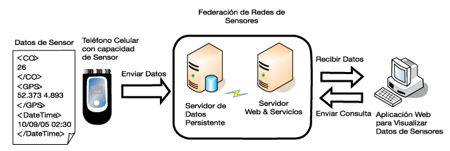

Toma y envío de datos
REGISTRO Y ENVÍO DE DATOS
PETICIONES GET Y POST

Nuestro punto de partida un sistema de control sensorizado, el cual queremos registrar y tener acceso en tiempo real a los datos. Normalmente, los sistemas de control que se usan a nivel educativo tienen el potencial de poder ofrecernos la información en tiempo real a través de un pequeño servidor Web que se puede gestionar en la propia placa, pero no tienen la capacidad de gestionar un histórico de datos debido a la escasez de memoria de almacenamiento, por ello, esta posibilidad no la vamos a considerar.
Una vez que tenemos las variables con los datos que deseamos registrar, vamos a construir una URL para madar la información a nuestro servidor. Esa solicitud la vamos a hacer a través de un petición GET, es más fácil de enterder que la POST, y nos vale para la mayoría de los casos. Esta solicitud tiene la siguiente estructura: http://miDominio/mandaDatos.php?var1=dato1&var2=dato2
Se puede deducir que mandaDatos.php es un script que elaboraremos ad hoc, y que las variables var1,var2, ... son las variables con sus respectivos valores (numéricas o alfanumerícas). A esa URL se accederá co el bloque GET que montramos bajo estas líneas si trabajamos con Steamakersblocks.
Si trabajamos con el entorno IDE de arduino, el código a insertar sería algo como lo que se muestra, una vez, claro esto, tenemos recopilados los datos y activada nuestra conexión WiFi.
#include
HTTPClient http;
WiFiClient client;
String url = "http://miDominio/mandaDatos.php?temperatura="+String(temp,2)+"&humedad="+String(humedad,1);
http.begin(client, url);
int httpCode = http.GET(); // Realiza la petición
http.end();
}
}
El script PHP para añadir los datos a nuestra base de datos será el siguiente.
// Datos de conexión a la base de datos
$servidor = "localhost";
$usuario = "usuarioBD";
$password = "passwordBD";
$bd = "datalogger";
// Crear conexión
$conn = new mysqli($servidor, $usuario, $password, $bd);
// Comprobar conexión
if ($conn->connect_error) {
die("Error de conexión: " . $conn->connect_error);
}
// Comprobar que llegan los datos por GET
if (isset($_GET['temperatura']) && isset($_GET['humedad'])) {
date_default_timezone_set('Europe/Madrid');
$fecha = date("Y-m-d H:i:s");
$temperatura = $_GET['temperatura'];
$humedad = $_GET['humedad'];
// Preparar la consulta (más seguro que usar INSERT directo)
$stmt = $conn->prepare(
"INSERT INTO registro1 (temperatura, humedad,fecha) VALUES (?,?,?)"
);
$stmt->bind_param("dd", $temperatura, $humedad,$fecha);
if ($stmt->execute()) {
echo "Datos insertados correctamente";
} else {
echo "Error al insertar datos";
}
$stmt->close();
} else {
echo "Faltan datos";
}
$conn->close();
?>